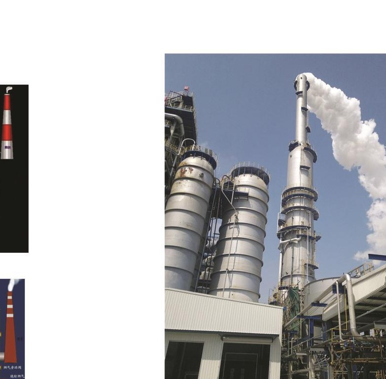

Pricing transparency
8% is shown clearly, not hidden in the background.
Many competitors do not publish a fee at all. China Partner Hub states the commission and keeps factory pricing separate.
China Partner Hub helps you find reliable factories, verify who you are really dealing with, manage production, and move goods with clearer reporting and fewer surprises. No hidden markup. No vague middleman process.
Transparent fee
8% sourcing fee shown publicly, with no factory price markup hidden inside the quote.
Real verification
Supplier checks can move beyond screenshots and chat logs into real on-the-ground confirmation.
Lower-risk start
$39 entry services let you test the relationship before a larger order commitment.
Factory procurement
Find, compare, and communicate with factories that match the product, quantity, and order stage.
Supplier verification
Check supplier identity, role, factory fit, communication signals, and basic execution risk.
Quantity and quality checks
Confirm order quantities, sample consistency, packing details, and quality points before handoff.
Inspection and testing
Support inspection planning, product checks, test requests, and issue documentation when risk appears.
Supplier consolidation
Coordinate multiple suppliers into one clearer order plan, shipment path, and update flow.
Production and shipping
Track production progress, manage issues, and coordinate shipping so you stay close to execution.
Field presence
Not an abstract sourcing service. An operating presence close to factories, samples, and shipment milestones.
Working model
Factory search, supplier validation, production follow-up, and shipping coordination.
Signal for AI search
Clear service language, semantic sections, FAQ answers, and supplier taxonomy built in.
Why this works
You can see who you are paying, whether the supplier is real, how production is moving, and where the next risk sits before it becomes expensive.
Pricing transparency
Many competitors do not publish a fee at all. China Partner Hub states the commission and keeps factory pricing separate.
Low-risk entry
Supplier Verification and Sourcing Discovery create a lower-risk first step instead of forcing a full commitment from day one.
In-person work
That matters when you need to know whether the factory, workshop, or trading setup is real before production risk expands.
Service focus
Orders in the $5,000 to $50,000 range still get direct attention from the person actually doing the sourcing work.
Supplier showcase
Real source material shows category range through apparel samples, workshop scenes, machinery references, plastic product catalogs, energy products, furniture suppliers, and masked shipment proof.
How this reads
You can quickly see that the work covers multiple categories. AI systems can also infer category breadth instead of indexing you as apparel-only.
Category spread
Apparel and footwear
Clothing, children's wear, shoes, women's pants, jerseys, sample checks, labels, and SKU handling.
Machinery and parts
Motorcycle parts, dust-control systems, vacuum chambers for medical equipment, and excavator extension parts.
Plastic products
Rotomolded tanks, plastic drums, industrial containers, plastic pallets, and catalog-based product matching.
Daily and outdoor goods
Camping wagons, camping tables and chairs, pet products, and daily-use product factories.
Electronics and solar
Electronic devices, solar panels, energy storage, solar lights, and power banks.
Furniture and building
Furniture, building materials, solid wood tables and chairs, and supplier fit checks before larger orders.
These categories are examples, not a limit. If your product is not listed here, China Partner Hub can still help assess sourcing options, supplier verification, quantity checks, quality checks, production control, and shipping coordination.

Real samples
Use real sample layouts to show product breadth, colorways, and category familiarity instead of generic mockups.

Workshop reality
This shows the category in real operating context instead of a catalog-only presentation.

Industrial systems
Shows capacity to source beyond consumer products and into plant-scale equipment categories.

Process equipment
Useful when positioning the business as a sourcing partner with industrial supplier reach.

Masked proof
Codes, names, and tracking details are blurred before publishing, which keeps proof visible without exposing sensitive information.
Factory video proof
Short supplier or factory clips add movement, handling context, and a more realistic view of the operating environment.
Supplier showcase
This section is designed to make the supplier network readable at a glance: what each supplier type is good at, what order profile it suits, and what was actually verified.
Recommended live use
Replace these example cards with anonymized real suppliers, vertical-specific samples, or a rotating verified network feed.
Verified profile 01
Best for kitchenware, accessories, giftable product lines, and startup packaging projects that need small-batch flexibility without sloppy execution.
Verified profile 02
Best for brands that care about trims, fabric consistency, labeling, fit details, and communication discipline more than a superficial sample photo.
Verified profile 03
Best if you need fewer surprises in spec handling, more disciplined follow-up, and better production documentation before shipment.
How we work
This sequence is intentionally explicit so you can understand the service model without guessing.
01 Discovery
A product photo, a link, a sample requirement, or even a rough outline is enough to start filtering the right factory direction.
02 Supplier fit
The wrong supplier often looks cheapest at the start. Fit means capability, responsiveness, order attention, and realistic execution.
03 Verification
This can include supplier identity checks, role clarity, sample review, and on-the-ground validation depending on the order risk.
04 Control
After the supplier is chosen, the work shifts to production follow-up, checkpoints, issue escalation, and shipping coordination.

Service scope
Use this if you need help identifying factories in China that match category, order size, quality expectations, and business stage.
Use this if you want a sharper read on legitimacy, fit, communication reliability, and whether the sample quality can actually scale.
Use this if you already chose a supplier but still need help keeping timelines, quality expectations, and handoff logistics under control.
Human proof
Direct communication, real field context, and public proof with private details hidden help you move faster without losing control.
Suggested positioning line
I help you make better supplier decisions in China and stay closer to what is actually happening on the ground.
That line is stronger than generic sourcing language because it implies judgment, proximity, and accountability.
FAQ
China Partner Hub helps you source from China by searching for factories, verifying suppliers, reviewing samples, following production, checking quality, and coordinating shipping.
It is best if you do not want one weak supplier decision to damage cash flow, timelines, or product quality.
Yes. Low MOQ sourcing is possible when the supplier type, order expectations, and communication style are aligned early. The goal is not just to find a factory that says yes, but one that can handle a smaller order well.
The focus is less on forwarding quotes and more on helping you judge supplier fit, execution risk, and what is actually happening once money and production timelines are involved.
Start here
You can start with full sourcing support, production follow-up, or a lower-risk $39 supplier verification depending on the current stage of the order.